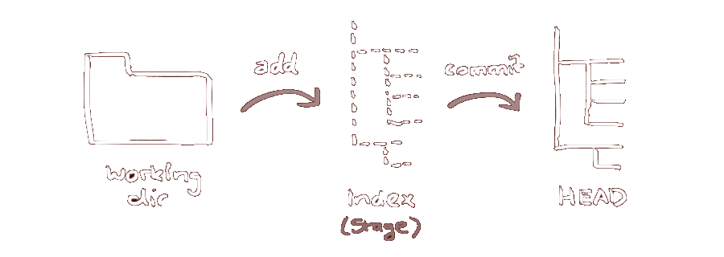

Git Init
Para crear un nuevo repositorio de git
creamos un directorio nuevo, lo abrimos y ejecutamos
git
init
Directorios de trabajo
Git divide el repositorio local en 3 'árboles' diferentes:
Directorio de trabajo Contiene los archivos de nuestro repositorio.
Index La zona intermedia.
Head Apunta al último commit que hemos realizado.
Aquí un dibujo para aclarar esta información:
Git Branch
Es el comando usado para crear una rama.
Para ello usamos este comando:
git branch
[nombre_rama]
Git Checkout
Para cambiarnos a una rama ya creada usamos el siguiente comando:
git
checkout [nombre_rama]
Para crear una rama y cambiarnos directamente a ella, usaremos:
git checkout -b
[nombre_rama]
Git Fork
Es una copia exacta de un repositorio original
que podemos usar como un repositorio git cualquiera.
Para ello usaremos el siguiente comando:
git
fork
Git Clone
El git clone, se usa para crear una copia local de un repositorio.
Se usa el siguiente comando:
git
clone [repositorio]
Si queremos clonar un repositorio de un servidor remoto, usaremos:
git clone
[username@host:/repositorio]

Estado del directorio y cambios locales
Para mostrar el estado del directorio de trabajo que estamos usando, usaremos:
Para reemplazar cambios locales usamos el comando:
git
checkout -- [nombre_archivo]
Este comando reemplaza los cambios en tu directorio de trabajo con el último contenido de HEAD.
Los cambios que ya han sido agregados al Index,
así como también los nuevos archivos, se mantendrán sin cambio.
En caso de que el usuario quiera deshacer todos los cambios locales y commits,
puede traer la última versión del servidor y apuntar a tu copia local principal con el siguiente comando: